Eine Menge 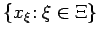 von Vektoren aus  heißt orthogonales System, wenn es den Nullvektor nicht enthält und 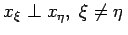, also 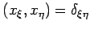 gilt, wobei
heißt orthogonales System, wenn es den Nullvektor nicht enthält und 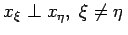, also 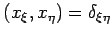 gilt, wobei
das KRONECKER-Symbol bezeichnet. Ein orthogonales System heißt orthonormal oder orthonormiert, wenn auch noch 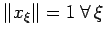 gilt.
In einem separablen HILBERT-Raum kann ein orthogonales System aus höchstens abzählbar vielen Elementen bestehen. Im weiteren ist daher stets 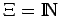.
| Beispiel A |
|
Das System im reellen Raum 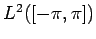 und das System im komplexen Raum sind orthonormale Systeme. Diese beiden Systeme heißen trigonometrisch. |
| Beispiel B |
|
Die LEGENDREschen Polynome 1. Art bilden ein orthogonales System von Elementen im Raum |
| Beispiel C |
|
Die HERMITEsche Polynome gemäß der 2. Definition der HERMITEschen Differentialgleichung (9.63g) bilden ein orthogonales System im Raum 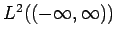. |
| Beispiel D |
|
Im Raum 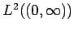 bilden die LAGUERREschen Polynome ein orthogonales System. |
Jedes orthogonale System ist linear unabhängig, denn der Nullvektor ist ausgeschlossen. Umgekehrt, hat man ein System 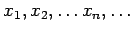 von linear unabhängigen Elementen in einem HILBERT-Raum  , dann existieren nach dem GRAM-SCHMIDTschen Orthogonalisierungsverfahren Vektoren 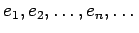, die ein orthonormales System bilden und die bis auf einen Faktor mit Modul 1 eindeutig bestimmt sind.
, dann existieren nach dem GRAM-SCHMIDTschen Orthogonalisierungsverfahren Vektoren 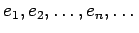, die ein orthonormales System bilden und die bis auf einen Faktor mit Modul 1 eindeutig bestimmt sind.